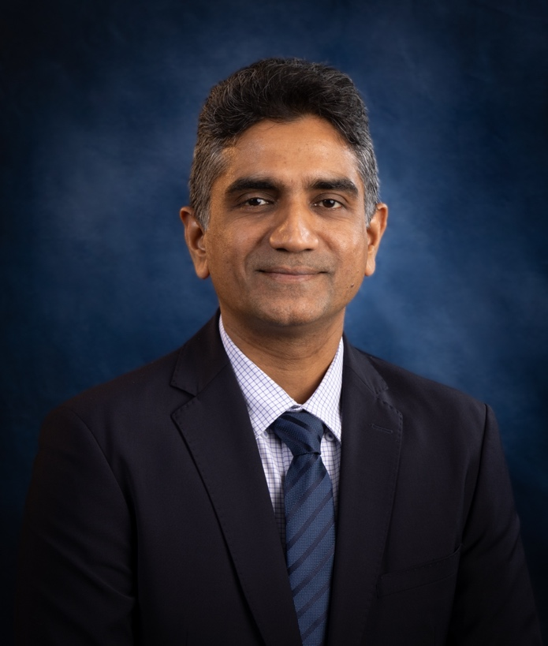

Two decades of work in vaccine and pathogen informatics, teaching and mentoring, and building bioinformatics programmes and institutions across six countries.

I am a bioinformatician and data scientist working at the interface of integrative biology and computation. Trained at the National University of Singapore (B.Appl.Sc., M.Sc., and Ph.D.), my research spans viruses, immune responses, vaccines, drug design, and disease biomarkers — connecting genotype to phenotype through biological data warehousing and applied bioinformatics. Across more than two decades and six countries, this work has produced over 90 peer-reviewed publications and three granted US patents, and attracted more than 3,600 citations.
My career has moved across six countries. After training and early research in Singapore — at the National University of Singapore and Johns Hopkins' Singapore division — I joined the faculty of Johns Hopkins University in the United States in 2010. In 2011, I was selected for the team that helped establish Perdana University in Malaysia, in collaboration with the Johns Hopkins University School of Medicine, where I joined as its sole bioinformatics faculty member and, building a team over the following years, became Founding Director of its Centre for Bioinformatics, Founding Dean of its School of Data Sciences — the first such school in Malaysia — and Founding CEO of the spin-off company Alterquo. From 2020 to 2023, while on secondment from Perdana University, I was a Professor at Bezmialem Vakıf University in Türkiye, on a TÜBİTAK International Fellowship for Outstanding Researchers, and co-founded the clinical-informatics start-up BioAct. Since February 2023, I have been Professor and Associate Dean at the College of Computing & Information Technology, University of Doha for Science & Technology (UDST), in Qatar, where I help steer academic strategy, accreditation, and interdisciplinary capstone work with industry, and helped establish its Centre of Excellence in Bioinformatics.
Teaching has run alongside all of this. I have taught genomics, immunology, bioinformatics, data science, and computing across four countries — to roughly 1,500 students at the National University of Singapore, medical and bioinformatics students at Perdana University in Malaysia, students in Türkiye, and, most recently, computing and IT students at UDST in Qatar. I have supervised 17 research students to graduation (12 MSc and 5 PhD) and currently advise three PhD candidates. I have led the development of several undergraduate and postgraduate programmes across Malaysia and Qatar, led their accreditation in Malaysia, and contributed to programme accreditation at UDST.
Much of my service has gone into building the regional bioinformatics community. Through the Asia-Pacific Bioinformatics Network (APBioNET) — the oldest regional affiliate of the International Society for Computational Biology (ISCB) — I helped drive much of its recent growth: expanding the InCoB conference series, launching the inaugural Asia & Pacific Bioinformatics Joint Congress (which united 15 regional organisations in 2024), and establishing new capacity-building programmes, a Student Council, an awards programme, a Bioinformatics Research Consortium, and a 2024 memorandum of understanding with ISCB. I serve as its Vice President (Operations) and Immediate Past President. I am also Chairperson of the Global Organisation for Bioinformatics Learning, Education and Training (GOBLET), and I led the Bioinformatics Grand Challenges Consortium (BGCC) in defining seven systemic challenges in bioinformatics training. In 2025, I served as one of the Editors-in-Chief of the second edition of the Encyclopaedia of Bioinformatics and Computational Biology (Elsevier). Beyond these roles, I run 10 data-science interest groups that connect close to 1,000 practitioners across the region.
Six connected threads, spanning core research, tools and databases, synthesis, and training.
Mapping the human–pathogen interactome — the DNA, RNA, and protein sets involved in infection — to expose pathogenesis and pinpoint intervention targets.
Designing vaccines that withstand the antigenic diversity and high mutation rates of pathogens such as influenza A and HIV-1, through diversity-aware, computational target discovery.
Predicting epitopes and HLA-restricted targets — modelling how antigenic peptides trigger immune responses — to guide rational immunogen design.
Linking molecular and microbial signatures to disease with machine learning — classifying patient gene-expression data, and applying metagenomic and microbiome analysis to the gut microbiome in cancer and neurological disease, to support diagnosis and prognosis.
Building knowledge-discovery tools and specialised databases that make biological diversity tractable. DiMA — a published tool for sequence-diversity analysis — is a concrete step toward ViVA, an envisioned Viral Immuno-Variome Analyzer integrating diversity with immune and clinical data.
Synthesising the field through reviews, encyclopaedic references, and training — from whole-exome-sequencing and big-data reviews to co-editing the Encyclopaedia of Bioinformatics and helping define the field's grand challenges.
Two decades of output and citation, drawn from Google Scholar.
Two decades of co-authorship, and a career spanning six countries — drag to explore; click a collaborator to open their profile.
A record of founding and leading academic entities — centres, schools, and companies — across Singapore, the USA, Malaysia, Türkiye, and Qatar.
| 2023–Present | Professor & Associate Dean | University of Doha for Science & Technology, Qatar |
| 2024 | Founding Convenor | Centre of Excellence in Bioinformatics, University of Doha for Science & Technology, Qatar |
| 2019–2023 | Professor (secondee) | Bezmialem Vakıf University (BILSAB), Istanbul, Türkiye |
| 2020–2023 | Co-Founder | BioAct (clinical-informatics start-up), Türkiye |
| 2019–2023 | Professor (seconded) | School of Data Sciences, Perdana University, Malaysia |
| 2018–2019 | Chief Data Officer | Perdana University, Malaysia |
| 2017–2019 | Founder & CEO | Alterquo, Malaysia |
| 2017–2019 | Associate Professor | School of Data Sciences, Perdana University, Malaysia |
| 2016–2019 | Senate Member | Perdana University, Malaysia |
| 2016–2019 | Founding Dean | School of Data Sciences, Perdana University, Malaysia |
| 2016 | Acting Dean | School of Data Sciences, Perdana University, Malaysia |
| 2014–2017 | Visiting Scientist | Pharmacology & Molecular Sciences, Johns Hopkins University, USA |
| 2014–2016 | Founding Director, Centre for Bioinformatics | Perdana University, Malaysia |
| 2011–2017 | Assistant Professor | Graduate School of Medicine, Perdana University, Malaysia |
| 2011–2014 | Adjunct Assistant Professor | Pharmacology & Molecular Sciences, Johns Hopkins University, USA |
| 2011 | Visiting Scientist | Immunology Frontier Research Centre (IFReC), Osaka University, Japan |
| 2010–2011 | Research Associate (Faculty) | Johns Hopkins University, USA |
| 2010 | Post-Doctoral Research Fellow & Teaching Associate | Yong Loo Lin School of Medicine, National University of Singapore |
| 2006–2010 | Teaching Assistant | Yong Loo Lin School of Medicine, National University of Singapore |
| 2005–2006 | Research Fellow | Division of Biomedical Sciences, Johns Hopkins, Singapore |
A selection of most-cited contributions across databases, viral diversity, vaccines, biomarkers, and field-defining reviews. Full list on Google Scholar.
Selected from 70+ invited talks, keynotes and plenaries delivered across more than a dozen countries since 2003.
| 2026 | Invited moderator — 4th HMC Precision Medicine Conference, “Data-Driven Healthcare: A Multidisciplinary Path to Precision Health,” Hamad Medical Corporation, Qatar |
| 2025 | Invited speaker — 3rd International Conference on Natural Products & Chronic Diseases, “Mining Natural Viral Diversity for Global Health” |
| 2024 | Invited speaker — Life Science Training Around the Globe, New York, USA |
| 2024 | Invited moderator — Joint Special Session, 1st Asia & Pacific Bioinformatics Joint Conference (APBJC 2024) |
| 2023 | Invited speaker, Education Track — International Conference on Bioinformatics (InCoB 2023), Brisbane, Australia |
| 2023 | Invited speaker — 1st International UAE Rare Disease Society Congress, Dubai, UAE |
| 2023 | Invited speaker — International Conference on In Silico Trends & Approaches in Drug Discovery, Doha (UDST), Qatar |
| 2021 | Invited keynote — “Knowledge Discovery from Unstructured Biomedical Data: Data Science, Bioinformatics & Precision Medicine” |
| 2021 | Invited plenary — “Biological Data Warehousing & Bioinformatics for Society 5.0,” 1st International Seminar of Science & Technology for Society & Development, Indonesia |
| 2020 | Keynote — “Analysis of Viral Diversity: A Bioinformatics Approach,” ICDSB 2020, Institute of Bioinformatics, India |
| 2020 | Invited speaker — “A Reverse Vaccinology Approach to Vaccine Target Discovery for COVID-19,” InCoB satellite symposium |
| 2018 | Keynote — Symposium on Biomathematics (SYMOMATH 2018), Depok, Indonesia |
| 2012 | Invited speaker — 10th Asia Pacific Conference on Human Genetics (APCHG), Kuala Lumpur, Malaysia |
| 2011 | Invited speaker — Federation of Asian & Oceanian Biochemists and Molecular Biologists (FAOBMB) Congress, Singapore |
| 2011 | Seminar — Department of Pharmacology & Molecular Sciences, Johns Hopkins University School of Medicine, USA |
| 2011 | Seminar — Immunology Frontier Research Center (IFReC), Osaka University, Japan |
| 2010 | Speaker — International Conference on Bioinformatics (InCoB), Tokyo, Japan |
| 2008 | Invited speaker — 1st Pan-American Dengue Research Network Meeting, Recife, Brazil |
Elected leadership and editorial service across the international bioinformatics community.
| 2020–2023 | International Fellowship for Outstanding Researchers — TÜBİTAK (Scientific & Technological Research Council of Türkiye) |
| 2019 | Best Poster Award for Poster Presentation: Lee JM, Ling MHT and Khan AM (2019). A Computational Meta-ome Framework for Homology Search. Research Day, Perdana University, 5 April |
| 2019 | Certificate of Appreciation in recognition for outstanding contribution as the organizing committee for Asia Pacific Research Platform (APRP) Working Group at Asia Pacific Advanced Network (APAN): connecting data, application and people. APAN48, Putrajaya, Malaysia, 24 July |
| 2017 | Best Paper Award (Gold; BMC Medical Genomics), 16th International Conference on Bioinformatics (InCoB 2017), Shenzhen, China, Sept 20-22 |
| 2017 | Best Paper Award (Gold; BMC Genomics), 16th International Conference on Bioinformatics (InCoB 2017), Shenzhen, China, Sept 20-22 |
| 2016 | Meritorious Service Award by APBioNET, in recognition of commendable service provided to APBioNET and InCoB on an on-going basis – InCoB 2016; Sept 21-23, 2016; Singapore |
| 2015 | Meritorious Service Award by APBioNET, in recognition of commendable service provided to APBioNET and InCoB on an on-going basis – GIW/InCoB 2015; 2015 Sept 9-11; Odaiba, Tokyo, Japan |
| 2010–2012 | Meritorious Service Award by APBioNET, in recognition of dedication, service and contribution to the 11th International Conference on Bioinformatics and on the ExCo of APBioNET |
| 2012 | One of the top 5% most viewed LinkedIn profiles for |
| 2011 | Immunology Frontier Research Center (IFReC) Young Researcher Fellowship, Osaka University, Japan |
| 2011 | Service Award by APBioNET and ISCB for services rendered to the 10th International Conference on Bioinformatics - 1st ISCB Asia Joint Conference, held in Kuala Lumpur, Malaysia, from 30th November to 2nd December |
| 2010 | Finalist for Chua Toh Hua Gold Medal Award (2010) - for the most outstanding thesis in the Yong Loo Lin School of Medicine, National University of Singapore |
| 2009 | Travel Fellowship, First Essential Bioinformatics Practical Workshop at Instituto Aggeu Magalhães, FIOCRUZ/PE, Brazil, June 29 - July 1 |
| 2009 | Travel Fellowship, 1st ASEAN e-Culture Exchange Workshop for Youths 2009, organized by The Authority for Infocommunications Technology Industry of Brunei Darussalam (AITI), March 24-27 |
| 2009 | Best Poster Award, Singapore Symposium on Computational Biology 2009 (8th September 2009), Singapore |
| 2008 | International Society for Computational Biology (ISCB) Travel Fellowship, Sixth European Molecular Biology Organization Training Fellowship, Singapore |
| 2007 | International Conference on Bioinformatics (InCoB 07) Travel Fellowship, Hong Kong, August |
| 2003–2005 | Graduate Research Scholarship (M.Sc.), National University of Singapore |
| 2005 | Star Student Award, 2005, Institute for Infocomm Research (I2R), Singapore |
| 2004 | Singapore Biomedical Research Council (BMRC) Travel Fellowship, 1st Asian Regional Dengue Research Network Meeting, Bangkok, Thailand, October |
| 1999–2003 | Singapore Ministry of Education (MOE) Tuition Grant – National University of Singapore (NUS) |
| 2003 | Zuckerkandl Prize Award, for paper #2 published in the Journal of Molecular Evolution (see publications) |
| — | Featured Member, Scientific Malaysian magazine, inaugural issue |
| — | Life Member, Indonesian Society for Bioinformatics and Biodiversity (ISBB; locally MABBI – Masyarakat Bioinformatika dan Biodiversitas Indonesia) |
| — | Life Member, Bioinformatics Club for Experimenting Scientists (BIOCLUES), India's largest bioinformatics society |
I welcome conversations around research collaboration, advisory and editorial roles, doctoral supervision, and invitations to speak. If our interests overlap, I'd be glad to hear from you.
Or write to me directly at my email